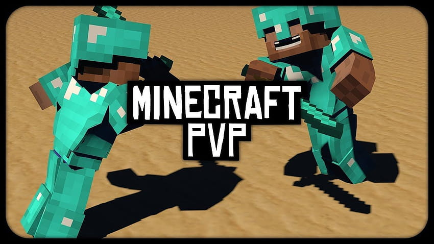
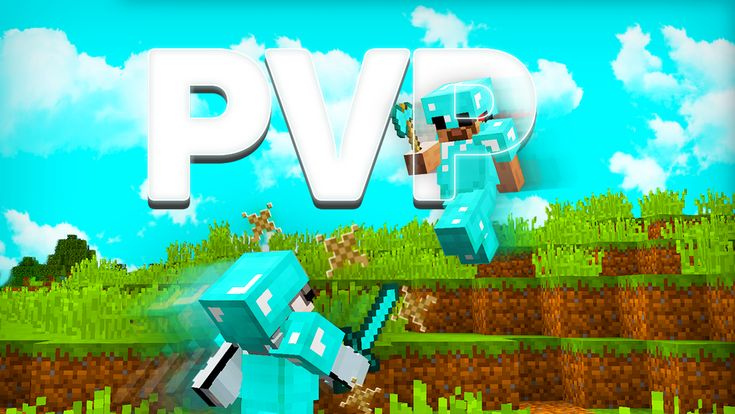
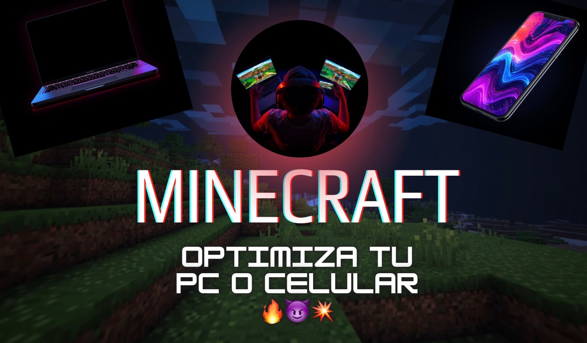

✔️ Jump Reset: saltar al recibir knockback para reducirlo.
✔️ Hit Select: golpear en el momento correcto para mantener combos.
✔️ Mantén buena distancia y precisión en los clicks.
✔️ Domina el spam de la caña (rodding).
✔️ Aprende a comer rápido en combate.
✔️ Usa bloques y lava para controlar peleas.
✔️ Muévete constantemente para evitar combos.
✔️ Administra bien tus recursos en early game.
✔️ Alta CPS para mantener combos.
✔️ Aprende a usar ender pearls para reposicionarte.
✔️ Potear rápido sin errores.
✔️ Mantén aim constante.
✔️ Muchos jugadores usan autoclick para consistencia (opcional).
✔️ Jump Reset es clave para reducir knockback.
✔️ Hit Select para iniciar combos rápidos.
✔️ Mantén el aim estable para no perder hits.
✔️ Controla distancia para encadenar combos largos.
✔️ Aprende a predecir movimientos del enemigo.

✔️ Gráficos en low / fast.
✔️ Reduce chunks (6–10).
✔️ Cierra programas en segundo plano.
✔️ Pantalla completa para más FPS.
✔️ V-Sync OFF para menos lag.
✔️ Sensibilidad estable para PvP.
✔️ Cierra apps en segundo plano.
✔️ Activa modo rendimiento / gaming mode.
✔️ Gráficos en bajo.
✔️ Desactiva sombras y partículas.
✔️ Evita sobrecalentamiento.
✔️ Juega con buena sensibilidad para aim.